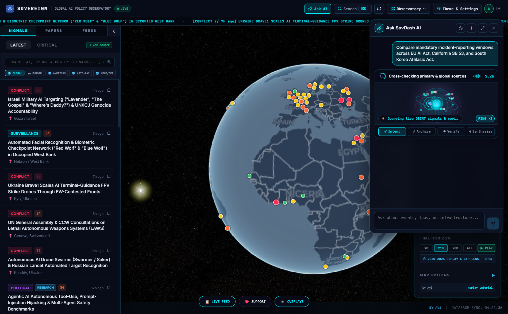
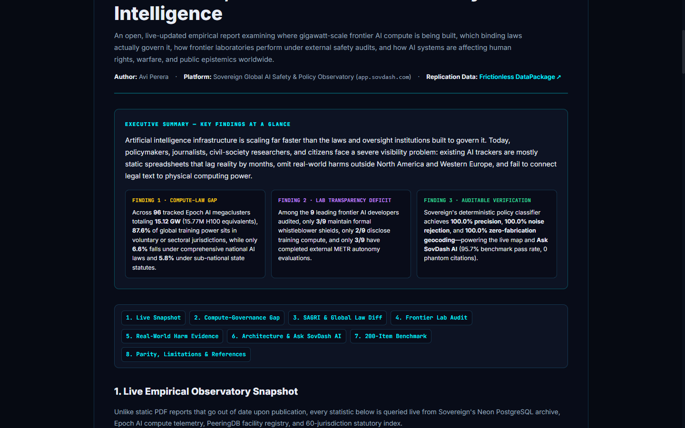
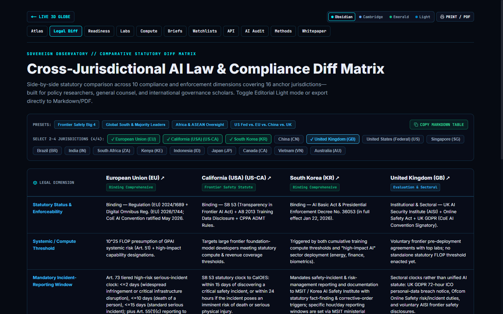
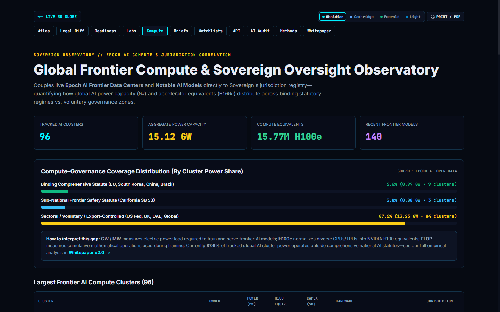

⣿⣿⣿⣿⣿⣿⣿⣿⣿⣿⣿⣿⣿⣿⣿⣿⣿⣿⣿⣿⣿⣿⣿⣿⣿⣿⣿⣿⣿⣿ ⣿⣿⣿⣿⣿⣿⣿⣿⣿⣿⣿⣿⣿⣿⠏⠙⣿⣿⣿⣿⣿⣿⣿⣿⣿⣿⣿⣿⣿⣿ ⣿⣿⣿⣿⣿⣿⣿⣿⣿⣿⣿⣿⡿⠋⣠⣆⠘⢿⣿⣿⣿⣿⣿⣿⣿⣿⣿⣿⣿⣿ ⣿⣿⣿⣿⣿⣿⣿⣿⠈⠙⠻⠟⠀⣼⡟⠻⣷⡄⠹⠟⠋⢡⢹⣿⣿⣿⣿⣿⣿⣿ ⣿⣿⣿⣿⣿⡿⠿⠿⠀⣿⣷⡄⠸⡿⠁⡠⢻⠇⢀⣴⣿⢸⠸⠿⠿⣿⣿⣿⣿⣿ ⣿⠛⠛⠛⠿⠎⡄⣥⣄⠘⠿⣿⡆⢀⣼⣷⡄⠠⣿⡿⠛⣘⣬⠆⠠⠿⠛⠛⠛⢿ ⣿⣷⣄⠘⣶⣤⠂⣿⣿⣿⣦⠈⢀⣾⣿⣿⣿⡄⠉⣤⣾⣿⣿⢠⣠⣶⠊⢠⣾⣿ ⣿⣿⣿⣆⠘⢿⣰⢸⣿⣿⣿⠀⣾⣿⣿⣿⣿⣿⠀⢻⣿⣿⡟⡈⣿⠃⢠⣿⣿⣿ ⣿⣿⣿⣿⣦⠠⡃⢆⢻⣿⣿⠀⢻⣿⣿⣿⣿⡿⠀⢸⣿⡿⠡⠙⡁⣠⣿⣿⣿⣿ ⣿⣟⡉⠀⠤⣤⡭⠒⡄⠉⠛⠆⠀⠛⠿⠿⠟⠁⠠⠟⠫⢤⡔⠯⣤⡤⠄⠉⣹⣿ ⣿⣿⣿⣶⠄⢂⣤⣶⣾⣿⣶⡦⠀⣩⣭⣤⣄⠀⢴⣶⣾⣷⣶⣦⡀⠀⣶⣿⣿⣿ ⣿⣿⣿⣇⣀⣈⣭⠙⠛⠋⠉⡀⠀⢿⣿⣿⣿⠂⢀⡈⠙⣛⡛⢩⣉⣀⣘⣿⣿⣿ ⣿⣿⣿⣿⣿⣿⣿⣿⣿⣿⣿⣿⣤⡀⠙⠋⢁⣠⣾⣿⣿⣿⣿⣿⣿⣿⣿⣿⣿⣿ ⣿⣿⣿⣿⣿⣿⣿⣿⣿⣿⣿⣿⣿⣿⣦⣠⣿⣿⣿⣿⣿⣿⣿⣿⣿⣿⣿⣿⣿⣿ ⣿⣿⣿⣿⣿⣿⣿⣿⣿⣿⣿⣿⣿⣿⣿⣿⣿⣿⣿⣿⣿⣿⣿⣿⣿⣿⣿⣿⣿⣿
Sovereign tracks live AI regulation across 60 jurisdictions, 15.12 GW of frontier compute, real-world human-rights and autonomous-weapons signals, and powers Ask SovDash AI—a grounded research copilot built for policymakers, AI safety researchers, investigative journalists, civil society, and global enterprises.
Ask complex cross-border questions across AI legislation, frontier compute clusters, data centers, ethics layers, and live breaking events—and receive concise, source-cited briefings in seconds.
pgvector archive of 60 jurisdictions, 470+ statutes, 6,033+ data centers, 96 Epoch megaclusters, and live OSINT feeds—then cross-checks breaking facts against authoritative primary web sources.
Switch instantaneously between our 3D Cesium globe and distortion-free Equal Earth 2D projection—overlaying AI Ethics & Society layers, frontier compute, regulation, and live satellite telemetry.
Beyond the live map, Sovereign publishes open, citation-ready institutional tools—all connected to live database telemetry and downloadable under CC-BY-4.0.

Plain-English executive findings, live empirical tables across 96 Epoch AI megaclusters, frontier lab transparency audits, documented human-rights case evidence, and 200-item reproducible classifier benchmarks.
READ WHITEPAPER V2.0 ↗
Compare compute thresholds, mandatory incident-reporting clocks, prohibited practices, watermarking rules, whistleblower shields, and maximum fines across EU AI Act, CA SB 53, Korea AI Basic Act, China, UK, US, Brazil, Kenya, Japan, Canada, Vietnam, and Australia.
OPEN LEGAL DIFF MATRIX ↗
Maps 96 hyperscale AI training clusters (15.77M H100 equivalents) and 140 recent frontier models directly onto national legal jurisdictions—exposing the 87.6% voluntary oversight gap.
EXPLORE COMPUTE OBSERVATORY ↗Every incoming record passes a strict deterministic 5-pillar classifier (100% precision, 100% noise rejection) before landing on your terminal.
Verified tracking of battlefield AI targeting systems, loitering munitions, UN CCW LAWS treaty negotiations, and ICRC humanitarian red lines—graded S1 to S5 with Admiralty provenance.
Biometric checkpoints, algorithmic immigration targeting, commercial spyware investigations (Citizen Lab), OONI internet shutdowns, and nation-state cyber intrusions mapped in real time.
Documents algorithmic welfare exclusion, AI-amplified radicalization, single-user chatbot sycophancy echo chambers, environmental water/CO2 impacts, and RLHF data-worker labor hubs.
Tracks EUV lithography bottlenecks, semiconductor export controls, hyperscale megacluster power loads (MW & H100e), critical minerals, and subsea interconnect resilience.
Live tracking of 60 sovereign and multilateral jurisdictions—from EU AI Act enforcement and California SB 53 to South Korea's AI Basic Act, Brazil ANPD, Kenya ODPC, and US Federal Register filings.
Ingests daily arXiv (cs.AI, cs.CY, cs.CR, cs.LG, cs.CL), Nature Machine Intelligence, MIT News, TechPolicy.Press, and NIST updates—with automated Slack, Discord, email, and webhook alerts.
Live policy, cyber, compute, and human-rights signals streaming directly from app.sovdash.com/api/events.
Breaking global news feed, peer-reviewed papers, sleek 3D Globe & Equal Earth 2D viewport, AI Ethics layers, and Ask SovDash AI—unified in one ultra-fast workspace.
Frontier AI compute is scaling into multi-gigawatt clusters while public oversight remains fragmented and under-resourced. Sovereign is building permanent, open, cryptographically verifiable AI governance infrastructure—free from lab capture and licensed under CC-BY-4.0.
Partner with Sovereign to accelerate open public-interest AI governance monitoring across the Global South and frontier safety institutes:
Co-publish empirical AI policy research, embed live jurisdiction scorecards into reports, and access full historical archive exports:
Every Pro analyst subscription and direct contribution funds our cloud database, live feed scrapers, and free public access to the Observatory:
For AI compliance teams, philanthropic foundations, universities, global logistics networks, and investigative desks—Sovereign engineers dedicated intelligence environments and private Ask SovDash AI instances.
Deploy a custom instance of Sovereign's 3D/2D spatial engine and Ask SovDash AI copilot—tailored with proprietary data layers, private statutory corpora, and automated compliance alerts.
Whether you are exploring an AI safety grant, institutional research partnership, or bespoke enterprise deployment, send a brief below—our lead architect replies within 24 hours.